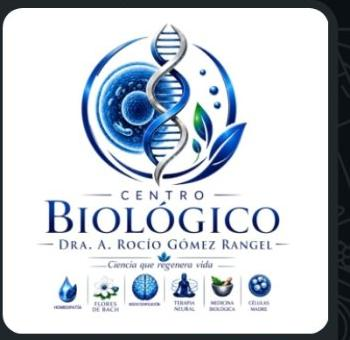

Centro Biológico — Dra. Alma Rocío Gómez — Medicina Integrativa y Regenerativa
Ciencia que regenera vida. Salud integral, bienestar y vida en equilibrio.
Agenda tu cita por WhatsApp Descargar la appTerapias y tratamientos innovadores para activar la capacidad natural de tu cuerpo. Un enfoque holístico que une la ciencia y la naturaleza para cuidar tu salud de manera integral.